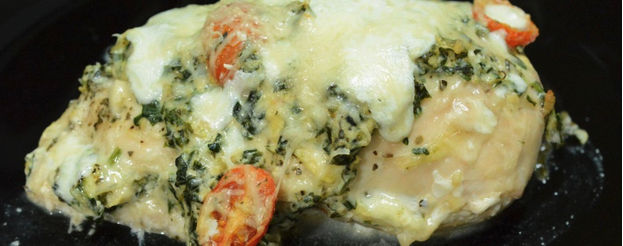

Home
Chicken stuff with Spinach Artichoke Dip

This was a recipe I found when I was doing the keto diet. It was so good I ended up including in my regular repertoire of recipes
Ingredients
- Spinach and Artichoke Dip
- 8 oz Cream Cheese
- 1/4 Cup Mayo
- 4 oz Shredded Parmesan
- 1 Tbsp Minced Garlic
- 1 Tsp Crushed Basil
- 1 can Artichoke Hearts (14 oz)
- 255 g Spinach
- To Taste Salt and pepper
- Additional Ingredients
- 6 Chicken breasts
- 8 Oz Mozzarella Cheese
- 2 Oz Parmesan Cheese
- 10 Oz Cherry Tomatoes
Steps
- Prepare the Spinach and Artichoke dip per the original instructions
- Make a slit in the chicken breasts and stuff with dip
- Close the chicken with a toothpick
- Place in a greased casserole dish
- Chop the cherry tomatoes in half and combine with the remaining dip
- Cover the chicken with the remaining dip
- Cook for 35 minutes at 400 degrees
- Shred the Mozzarella and Parmesan cheese, then cover the dish with the cheese
- Bake for another 15 minutes at 400 degrees until the cheese is melted